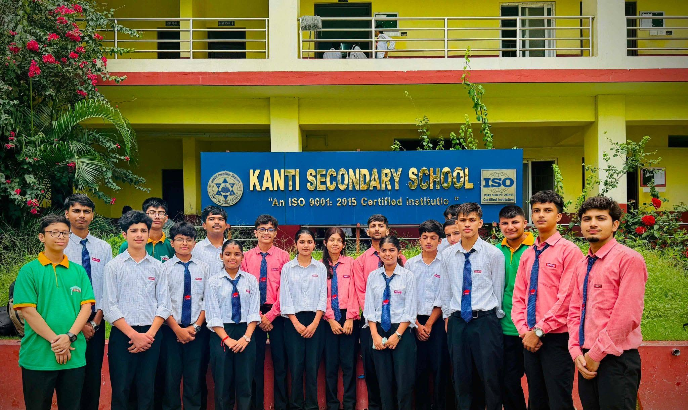
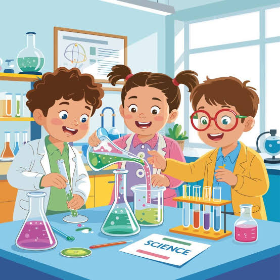
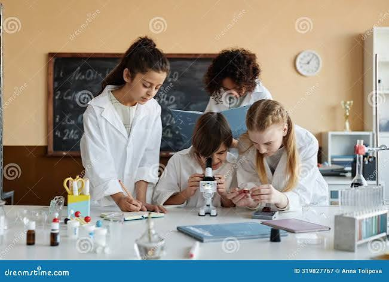
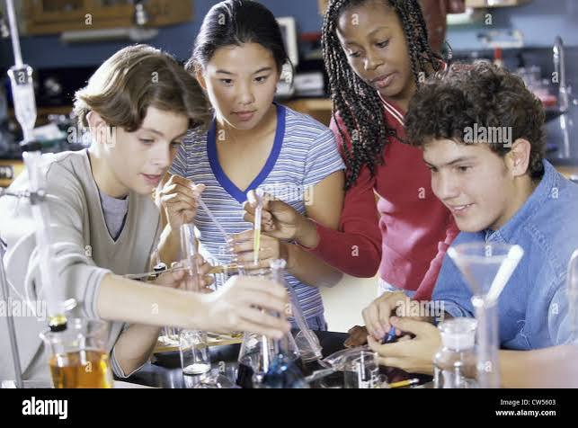

Who We Are
Kanti Science Club is the student-run science community of Kanti Secondary School, Butwal-04, Rupandehi — a space for members to experiment, build, and present real projects alongside their regular studies.
The club provides students with opportunities to learn, experiment, research, innovate, and participate in science-based activities beyond the classroom.
We organize science fairs, robotics workshops, STEM seminars, quiz competitions, environmental awareness campaigns, astronomy observations, engineering projects, and leadership programs.
Every member is encouraged to think creatively, solve problems, work in teams, and become future innovators.
We meet weekly to run experiments, workshop ideas, and prepare for our annual exhibition. Membership is open to all students of Kanti Secondary School with an interest in science, technology, or engineering — no prior experience needed.



How Kanti Science Club began
A small group, one idea
The club started with a handful of students and two teacher advisors who wanted a regular space for hands-on science outside the classroom.
First exhibition
The club held its first Annual Science Exhibition, presenting a small set of student-built models to the wider school.
New committees, new domains
As membership grew, the club formalized an executive committee structure and expanded into robotics and electronics alongside classic science demos.
A yearly tradition
Kanti Science Club now runs workshops, competitions and an exhibition every year, with alumni continuing to mentor current members.
Our guiding principles
Our Vision
To make Kanti Secondary School a place where every student sees science as something to build and test, not just read about.
Our Mission
To give students hands-on access to experiments, tools and mentorship, and a yearly platform to showcase what they build.
Club Motto
Learn • Explore • Innovate • Inspire
Every student has the ability to become a scientist, engineer, researcher, inventor, or innovator.
What we believe in
Curiosity
Ask "why" and "what if" before looking for the answer.
Collaboration
The best projects are built by teams, not individuals.
Integrity
Honest results matter more than impressive-looking ones.
Persistence
Experiments fail before they work — we iterate, not give up.
Scientific Thinking
Encouraging evidence-based learning and logical reasoning.
Teamwork
Building collaboration through projects and competitions.
Environment
Promoting sustainable practices and environmental awareness.
Innovation
Supporting creativity, robotics, AI, programming, and engineering.
Goals that guide our club activities
Build practical skills
Give members real experience in electronics, coding, CAD and lab technique.
Represent the school
Compete in inter-school science fairs, quizzes and olympiads.
Serve the community
Run outreach activities like awareness campaigns and public demonstrations.
What we organize throughout the year
Weekly Sessions
Regular hands-on sessions covering experiments, project work and skill-building.
Workshops
Focused workshops on topics like robotics, electronics and CAD design.
Annual Exhibition
Our biggest event — a full showcase of the year's student projects.
Competitions
Inter-school quizzes, science fairs and olympiad preparation.
Guest Talks
Sessions with teachers, alumni and outside experts on emerging topics.
Community Outreach
Public demonstrations and awareness campaigns beyond the school gates.
What People Say About Our Club
Feedback from teachers, alumni and visitors who have experienced Kanti Science Club.